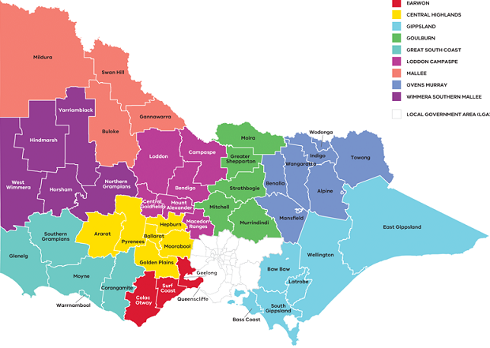

Please Select Region
Mallee
Wimmera Southern Mallee
Great South Coast
Barwon
Central Highlands
loddon campaspe
Goulburn
Ovens Murray
Gippsland
North-West Melbourne Metro
South-West Melbourne Metro
North-East Melbourne Metro
South-East Melbourne Metro
